The Cable Bible
A Guide to Cables and Connectors Used for Audiovisual Tech
A comprehensive source for identifying cables and connectors potentially used for audiovisual/media preservation. Cable types and connectors are organized by the primary purpose of the signal being transferred - video, audio-only, data (i.e. computer cables) and power. Examples of physical connectors (along with pinouts and contextual uses for each kind of cable/connector combination) are provided in buttons, nested within descriptions of signal types, wiring, interfaces and protocols!
License and Attribution

This work is licensed under a Creative Commons Attribution-ShareAlike 4.0 International License
Images pulled from the web are reused here under principle of fair use - they have all been downloaded and uploaded to the Github repository for the sake of stability, but original URLs are provided in mouse-over text.
Page created by Ethan Gates
Code adapted from the amazing ffmprovisr project!
Contribute
Contribute to the Cable Bible project via the AMIA Open Source Committee Github repository!
A Note on Inclusive Language
"Traditional" electrical and mechanical trades have sorted cable connections and fasteners in terms of "Male" (to refer to a connector or plug featuring pins or protrusions) and "Female" (to refer to a connector or plug into which pins or protrusions are inserted). The creator and maintainers of the Cable Bible find this obvious reference to a limited, cis-gendered, heteronormative understanding of human genitalia, gender, and sexual intercourse to be at best inappropriate and unnecessary, and at worst a perpetuation of harmful biases in the world at large.
The Cable Bible avoids using these classifications on the live site whenever possible. Suggested contributions should limit explanation of connections to "pins", "plugs", "sockets" or similar non-gendered terms. Maintainers will edit and enforce these terms before accepting pull requests to the main branch.
Sample images uploaded to the Cable Bible source repository do use a naming convention to indicate whether they depict a connector or port with or without pins, for clearer organization and to ease editing of the main text. In this case, the creator opted to use the terms "Cork" (to refer to a connector or plug featuring pins) and "Bottle" (to refer to a connector or plug into which pins are inserted). Again, maintainers on this repository will enforce this non-gendered naming convention on suggested contributions before accepting any pull requests to the live branch.
We acknowledge that this may cause some confusion when using the Cable Bible as a reference or educational tool, since few similar steps have been taken by cable manufacturers, vendors, or the vast majority of electrical, mechanical and technical professionals. So, a connector labeled "cork" in the Cable Bible source code should be considered equivalent to a "Male" connector elsewhere, and a "bottle" connector should be considered equivalent to a "Female" connector elsewhere.
Video
Analog Video
Analog audiovisual media record image and sound information as a continuous signal stored in or on the media itself (in the case of most "video" formats, as a continually fluctuating level of magnetic field strength on tape). Different types of video processing can allow that signal to be carried along different channels, with each channel representing a different portion of the video information (e.g. luminance/brightness, chrominance/color, sync). The types of cable you will need to work with an analog video signal will depend primarily on how these channels have been divided, as well as considerations of signal-to-noise ratio - all analog signals are subject to some degree of electronic noise or distortion, and different connection standards and interfaces have been developed to combat such signal degradation.
Composite
In composite cables, all video information (including both luminance and chrominance) is encoded on to a single channel/wire. As all information is traveling along one channel, composite video is the most susceptible to noise in the signal.
Introduced: 1956
Max resolution: Standard Definition (typically 480i or 576i)
Connectors:


Composite UHF
 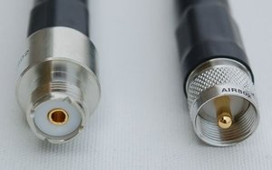
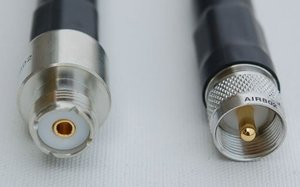
A WWII-era connector design originally intended for video connections in radar applications. Used with late-period 1/2″ open reel decks (e.g. Sony AV decks) and some early 3/4″ U-matic players.
Audio: no
Composite F-Type
 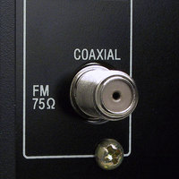
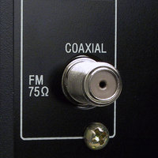
Found in North American television antenna, cable and satellite television installations; some older VCRs.
Audio: no
Component Y′PBPR
Y′PBPR signal is often referred to, imprecisely, simply as "component" video, although there are actually several standards of component video (any signal standard that splits video information into multiple channels is component, including S-Video and the multiple RGB standards). In Y′PBPR, the video signal is split into three channels: Y (containing luminance and sync), PB (the difference between blue and luma), and PR (the difference between red and luma). The remaining (green) chrominance information is derived from the relationship between these three signals. Y′PBPR cables are sometimes referred to as "yipper" cables and are connectors are usually color-coded (Y = green, PB = blue, PR = red); however Y′PBPR cables are fundamentally wired the same as composite cables and can be used interchangeably as long as the corresponding ports are properly connected.
Introduced:unknown
Max resolution: High Definition (up to 1080p)
Connectors:
 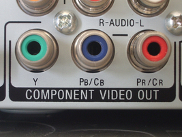
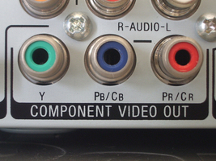
S-Video
S-Video (sometimes known as "separate video") cables carry video over two synchronized signal channels: Y (luma) and C (chroma, including saturation and hue). It can achieve better image quality than composite but lower color resolution than component RGB or Y′PBPR video. Most often associated with S-VHS but found with many other consumer deck formats as well.
Introduced:unknown
Max resolution: Standard Definition (typically 480i or 576i)
Connectors:
Y/C-688 ("Dub")
An earlier protocol that, like S-Video (which came later but was more common), split video into two components, luminance (Y) and chrominance (C). Intended to improve the quality of direct tape duplication from one video deck to another, this connection was often vaguely labeled/referred to simply as "dub". First seen on 3/4" U-matic decks, but continued to be used on professional Betacam and VHS/S-VHS decks. Though the same cables and pinouts were usually used, different Y/C-688-capable decks and devices modulated the chrominance signal at different frequencies - making Y/C-688 signal incompatible with S-Video devices (or sometimes even from one Y/C-688-capable deck to another)! Also incompatible with an implementation of Y′PBPR video that used the same connector and was *also* simply labeled "dub" (see above).
Introduced:unknown
Max resolution: Unknown
Connectors:
RGBS
A component video standard in which luminance and chrominance information is encoded into three channels (red, green and blue) and a fourth is used for composite sync (vertical and horizontal sync encoded together on the same wire). RGBS utilizes no compression and has no particular limit on color depth or resolution, but requires a high bandwidth as the three channels carry much redundant information (i.e. the same black-and-white luma information repeated three times). Extremely common in European equipment (especially monitors), rare elsewhere.
Introduced:unknown
Max resolution: Generally up to 1080p (HD), but can go beyond
Connectors:
RGBVH
A component video standard essentially the same as RGBS, except the sync signal is split into vertical and horizontal sync on separate wires. Most frequently employed in the context of the Video Graphics Array (VGA) display standard.
Introduced:unknown
Max resolution: Generally up to 1080p (HD), but can go beyond
Connectors:
RGBVH BNC

Found with some high-end monitors and video cards. Wires are usually color-coded, though the colors used for the two sync signals sometimes varies: e.g. yellow (H) and white (V), yellow (H) and black (V), gray (H) and black (V).
Audio: no
RGBVH Mini-DVI
 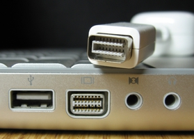
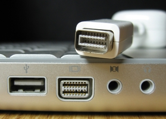
Used on certain Apple computers, especially laptops, to accept a DVI-A/VGA connection.
Audio: no
Digital Video
As opposed to analog video, in digital recording the video and/or audio signal is converted into a stream of numbers (bits), that collectively represent the luminance, chrominance, and other values that make up the image. The stream must be converted back into analog waveforms to be viewed on a monitor/video screen. Provided electrical noise is not too great, it will theoretically not affect the quantification of the signal. Different standards for digital video and audio have developed in order to make it possible to pass more information along one connection in the same (or shorter) amount of time (also to make it possible to send audio information along the same cable/connection as video).
SDI
Serial Digital Interface (SDI) actually refers to a family of SMPTE interface standards designed for the transmission of uncompressed, unencrypted digital video signals. The original standard ("SD-SDI"), defined for 480i and 576i standard definition video, has been periodically updated (e.g. HD-SDI, 6G-SDI) to allow for steadily increasing bit rates, frame rates, video resolutions, etc. Because SDI is an unencrypted digital signal, it has generally been restricted from use in consumer equipment, and is usually found in professional, broadcast-grade production and preservation environments.
Introduced: 1989
Max resolution: As of 2015, the 12G-SDI standard allows up to 2160p60 video at 12 Gb/s
Connectors:
FireWire
IEEE 1394, referred to as "FireWire," was developed by Apple as an interface for high-speed data transfer. However the FireWire interface was also employed by digital cameras recording to tape media with the DV (Digital Video) protocol (e.g. MiniDV, DVCAM, DVCPRO). Some camcorders were also able to directly output a DV signal to a digital video recorder or computer via a FireWire cable/interface. When used with digital video, the FireWire interface operates at a slower data rate than in most of its data transfer applications.
Introduced: 1994
Max resolution: Standard Definition, 100 Mb/s
Connectors:

DVI
Digital Video Interface (DVI) was designed to transmit uncompressed digital video while also supporting analog video modes (see: DVI-I, DVI-A). This broad compatibility led to widespread adoption in consumer electronics/computers. Digital-only DVI cables and interfaces were referred to as "DVI-D".
Introduced: 1999
Max resolution: Single Link: 1920x1200, 4.95 Gb/s; Dual Link: 2560x1600, 9.90 Gb/s
Connectors:
DisplayPort
A digital display interface standard developed by the Video Electronics Standards Association (VESA). Can be used to carry audio and packeted data transmissions, but most frequently employed to connect video sources to display devices. The development of succeeding versions of the DisplayPort standard (from 1.0 to the latest 1.4) have allowed for increases in display resolution, data rate, color depth, etc. "Dual-Mode DisplayPort" ports and connectors (also known as DisplayPort++) are also compatible with single-link DVI and HDMI output with the use of adapters; active converters are also available to make DisplayPort compatible with dual-link DVI or DVI-A/VGA signals.
Introduced: 2008
Max resolution: v1.0/1.1: 1.62 Gb/s; v1.2: 2.7 Gb/s; v1.3: 8K UHD, 5.4 Gb/s; v1.4: 8K UHD, 8.1 Gb/s
Connectors:
DisplayPort 20-pin (Full)
 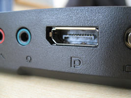
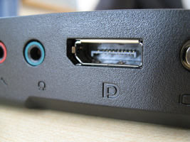
The full-size, 20-pin DisplayPort connection used for external connections on desktop computers, graphics cards, monitors, etc.
Audio: yes, optionally (use of channels for audio signal will limit bandwidth, resolution available for video)
HDMI
High-Definition Multimedia Interface (HDMI) is a proprietary interface for transferring uncompressed digital video and audio signals. HDMI was developed in order to provide an integrated, increased-bandwidth interface capable of carrying very high video resolutions and an audio signal while maintaining backwards compatibility with DVI. As with DisplayPort, succeeding versions (from 1.0 to current 2.0) have allowed for increases in resolution, frame rate, data rate, etc.
Introduced: 2002
Max resolution: v1.0/1.1/1.2: 1920x1200p, 4.95 Gb/s; v1.3/1.4: 2560x1600p, 10.2 Gb/s; v2.0: 4096x1600p, 18 Gb/s
Connectors:
HDMI Type A
 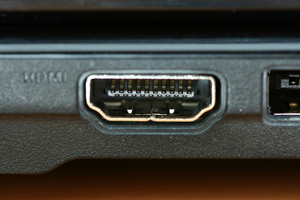
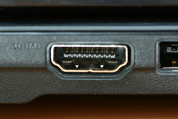
Generally used for HDMI input/output on television/computer monitors and desktops.
Audio: yes
Integrated Video
There is no such thing as a signal that combines analog and digital data in the same channel. However, The DVI interface allows for both analog and digital signals to be passed through the same cable and connector, creating something of a unique case.
DVI-I
The DVI protocol is backwards-compatible to allow for the transmission of analog RGBVH data via the VGA standard. The cable is the same as that employed by DVI-A (analog-only) or DVI-D (digital only), the difference with DVI-I is merely in the compatible connectors and ports.
Connectors:
DVI-I Mini-DVI
Can connect either an analog or digital signal to an Apple laptop, as long as the proper adapter is used in conjunction with a DVI cable with DVI-A, DVI-D or DVI-I connectors.
Audio: no
Audio
Analog Audio
Unlike analog video, analog audio signals are essentially only ever transferred over one channel (i.e. one-track monaural/"mono") or two (two-track mono, or stereo). Analog audio cables, generally speaking, thus only had to carry one channel of audio and two cables would simply be employed for recording or reproducing two-track mono or stereo (in contrast to the proliferation of standards and cables for video - composite, S-Video, RBG, etc). The most critical characteristic in regard to analog audio cabling, then (beyond connector types), regards balanced vs. unbalanced wiring, a method employed to reduce noise interference in audio cables.
Balanced Analog Audio
Balanced coaxial audio cables contain three wires: "earth" (electrical ground), "hot" (positive audio signal), and "cold" (negative audio signal). The audio signal is transferred on both the hot and cold lines, but the voltage in the cold line is inverted (i.e. signal is negative when the hot line's is positive, and vice versa). When the cable is plugged into an input, the hot and cold signals are mixed together, but the cold signal is also inverted again. This has the effect of strengthening the original, recorded audio signal (doubling the number of wires it was carried on) while also canceling out the signal of any unintentional noise in the signal picked up as the audio traveled over the cable. (Since that noise was essentially "recorded" positively on to both the hot and cold lines, flipping the polarity of the cold line at input gives you exact opposite noise signals, which cancel each other out.)
Reducing analog audio noise is an issue primarily with longer cables, or in professional/broadcast or preservation environments, where the absolute integrity of the audio signal is more highly valued than on consumer equipment.
Connectors:
Balanced 1/4″ TRS Jack (mono)

Also known as a "phone connector" for its use for many years to patch telephone connections. TRS stands for "Tip-Ring-Sleeve", referring to the three contacts on the jack (for the three wires, earth, hot and cold, present in balanced wiring). Often found with speakers, amps, some video equipment that produces monaural audio.
Balanced 1/8″ TRS "Mini" Jack (mono)

Essentially the same in design as the 1/4″ jack, just smaller. Used sometimes for balanced mono audio with computers or portable devices.
Unbalanced Analog Audio
Unbalanced audio cables contain only two wires for any one audio channel: "earth" (electrical ground) and "hot" (the audio signal). These are employed with short cables, internal cables or components (inside sound equipment), or consumer-grade equipment where noise is considered less of an issue.
Connectors:
Unbalanced 1/8″ Tip-Sleeve Jack (mono)

Smaller version of the unbalanced 1/4″ TS jack. Seen with [???]
Unbalanced 1/4″ Tip-Ring-Sleeve Jack (stereo)
By all outward appearance, the same as the 1/4″ TRS jacks used for balanced mono cables, except in the case of unbalanced stereo the three contact points are used for ground and two channels of audio, rather than ground and hot/cold versions of one audio channel. Often seen with professional headphones, and stereo microphone/monitor connections on professional video decks.
Unbalanced 1/8″ Tip-Ring-Sleeve Jack (stereo)
See previous. Frequently used for stereo output on portable audio devices - also on computer sound cards for line-in/line-out connections (to/from headphones, microphones, speakers, etc).
Digital Audio
For explanation of digital signals, see Digital Video section above.
AES-3
AES-3 is a standard for the exchange of digital audio signals developed in conjunction by the Audio Engineering Society and the European Broadcasting Union, and is therefore also often referred to as "AES-EBU". AES-3 is capable of carrying two uncompressed channels of uncompressed PCM audio, or compressed 5.1/7.1 surround sound over the same cable.
Introduced: 1985
Max resolution: 24-bit
Wiring and Connectors:
Balanced
Unbalanced
S/PDIF
Standing for Sony/Philips Digital Interface Format, S/PDIF refers to a consumer-grade variant of the AES-3 protocol (listed as "Type II" in the same international standard as AES-3: IEC 60958). Essentially interchangeable at the protocol level with AES-3, so devices carrying these signals can interface easily, provided the difference in physical connections and electrical level/impedance are accounted for.
Introduced: 1985
Max resolution: 20-bit
Wiring and Connectors:
Optical
Fiber optic cables transmit data signals as flashes of light over flexible, transparent fibers made of glass or plastic. In audio applications, they can allow transmission at higher bandwidths without the electromagnetic interference to which metal wires are susceptible. Due to attenuation (the reduction of the intensity of the light over distance), consumer-grade optical audio cables are generally short (5-10 meters).
Unbalanced
TDIF
The Tascam Digital Interface Format is a proprietary protocol and connector developed by Tascam, but licensed out to other manufacturers and therefore seen on a variety of audio devices. It is bidirectional, allowing the transmission of up to eight channels of digital audio.
Introduced: 1993
Max resolution: 31.25 kb/s
Wiring and Connectors:
Unbalanced
ADAT
Originally developed by Alesis for its Digital Audio Tape products, the ADAT Lightpipe interface became popular with third party manufacturers and so became synonymous with the standard rather than specifically Alesis DAT connections. ADAT supports transmission of up to eight channels of uncompressed digital audio at up to 48 kHz and 24-bit, giving them a much higher bandwidth than similar S/PDIF optical cables. Found exclusively in optical cable variety.
Introduced: 1992
Max resolution: 24-bit
Wiring and Connectors:
Optical
Data
Parallel Data
Digital transmission can occur in one of two basic methods: parallel or serial communication. In parallel communication, multiple bits (usually 8 bits, otherwise known as one byte) are transferred simultaneously on separate channels within the same cable, then combined and synchronized. This can result in a faster bit rate than serial transmission, but is also significantly more expensive (since it requires far more wires to create the cable) and the synchronization timing in parallel transmission is also susceptible to distance, making it impractical for longer cables. Parallel communication was popular in the 1980s but has generally fallen out of favor in modern data transmission.
PATA
Short for Parallel Advanced Technology Attachment, originally known simply as ATA until the later Serial ATA (SATA) standard was developed. An interface standard for the connection of storage devices, e.g. hard disk drives, floppy drives and optical drives. Given its maximum cable length of 18 inches, PATA is mostly limited to internal computer use, but it can occasionally be seen/used to connect to external drives.
Introduced: 1986
Max bit depth and rate: 16-bit; originally 16 mb/s, developed up to 133 mb/s
Connectors and ports:
Parallel SCSI
Referred to alternately as SCSI (Small Computers Systems Interface) Parallel Interface, SPI, or, before the advent of Serial SCSI, simply SCSI (pronounced "scuzzy"). Unfortunately, Parallel SCSI is not technically a single standard, but a series of almost a dozen related interfaces with ambiguous names ("Fast SCSI", "Ultra SCSI," etc.) and variable bit depths and rates. See the link to a comparison table below. In any case, Parallel SCSI cables were used to connect peripheral devices (scanners, removable storage drives and controllers, optical disc drives, etc.) to computers; unlike PATA, which could only connect a maximum of two devices, a single Parallel SCSI data bus could be attached to up to 8 or 16 devices. The symbol below generally marked a SCSI port on computers.
Introduced: 1986
Max bit depth and rate: See comparison table
Connectors and ports:
IEEE 1284
A standard for parallel communication variably, and more commonly, referred to as "parallel port", "printer port" or the "Centronics port", as it was originally developed by Centronics to facilitate communication between computers and Centronics-brand dot-matrix printers. Originally unidirectional ("send-only") for sending data from a computer to a printer, but later developed to allow for bidirectional communication, it became a popular alternative to Parallel SCSI for peripherals like floppy drives and network adapters and hard drives as it had cheaper circuitry. A symbol similar to the one below generally marked parallel/printer port connections on computers.
Introduced: 1970s
Max bit depth and rate:
Connectors and ports:
Serial Data
As opposed to parallel transmission, in serial communication bits are transferred sequentially over the same wire. Bytes must be assembled and sent as a unit and then disassembled by the receiving device. Though serial data transmission was developed before parallel transmission, parallel communication reigned for much of the late 1970s-1980s as physical performance limitations originally gave parallel communication higher data rates. Improvements in cable and circuit design have since made serial transmission the far faster and preferred option.
RS-232
Because it was the first serial data protocol to become a standard feature in personal computing, RS-232 was commonly referred to simply as "the serial port". It was used for bidirectional connection to many peripheral computer devices, including modems, printers, mice, external drives, etc. It was also used for remote connection and control of some VTRs. It is referred to as "RS" because it was originally sponsored by the Radio Sector of the Electronic Industries Association - changes in the sponsoring organization have caused the standard to be alternately referred to as EIA-232 and TIA-232. The symbol below sometimes marked serial port connections on computers.
Introduced: 1962
Max bit depth and rate:
Connectors and ports:
RS-232 DA-15


Found with some RS-232 connections, relatively rare compared to DB-25 and DE-9. Most commonly found with some modems, joysticks. (May be referred to, imprecisely, as "DB-15".)
RS-232 DE-9


Found with RS-232 connections with some modems, printers, and peripherals like keyboards or serial mice. (May be referred to, imprecisely, as "DB-9".)
RS-422
An improvement to the RS-232 standard to increase transmit speeds and/or maximum cable length. Introduced differential signaling to data cabling - a technique of reducing electromagnetic noise as it is transmitted over the wires in a cable, similar to balanced cables in analog audio.
Introduced: 1996
Max bit depth and rate: 10 Mb/s
Connectors and ports:
MIDI
Short for Musical Instrument Digital Interface, a standard for connecting a wide variety of electronic musical instruments to each other or to digital audio workstations. Though heavily/exclusively associated with audio, MIDI itself is not an audio signal - it is a data signal that carries "event information" to specify "control change" (CC) paremeters such as pitch, notation, volume, vibrato, timing, and other metadata that electronic musical devices use to *create* an audio signal and synchronize with each other. MIDI is usually employed in production and recording environments. As computer-based studio setups became more common, it became more and more desirable for MIDI devices to connect directly to a computer, rather than to dedicated MIDI devices. Existing connections for data streams were adapted to allow transmission of MIDI streams over more common, broader interfaces like serial buses, USB, FireWire, etc.
Introduced: 1983
Max resolution: 31.25 kb/s
Connectors and ports:
Serial Attached SCSI (SAS)
Serial Attached SCSI (SAS) replaced Parallel SCSI, using the same basic command set but replacing the transmission method from parallel to serial to improve transfer rate. Backwards compatible with SATA. Unlike Parallel SCSI, SAS is almost exclusively used in internal computer connections and data centers and very rarely found in use with peripherals.
Introduced: 2004
Max bit depth and rate: Originally 3.0 Gb/s, now up to 12.0 Gb/s
Connectors and ports:
SATA
Developed to replace Parallel ATA (PATA), Serial ATA is used to connect host bus devices to mass storage devices such as hard drives, optical drives, solid-state drives, etc. Generally found for internal connections in desktops and laptops, but used in some cases to connect to external drives as well.
Introduced: 2003
Max bit depth and rate: Originally 1.5 Gb/s, now up to 16.0 Gb/s
Connectors and ports:
Apple Desktop Bus (ADB)
A Macintosh-exclusive computer bus for connecting low-speed peripherals - mice, keyboards, etc. ADB connections were generally marked by the symbol below.
Introduced: 1986
Max bit depth and rate: 125 Kb/s
Connectors and ports:
PS/2
A PC-compatible low-speed computer bus for peripherals like mice, keyboards, etc. Its name comes from the IBM Personal System/2 line of computers with which it was introduced. Generally replaced older RS-232 connections employing DE-9 connectors.
Introduced: 1987
Max bit depth and rate:
Connectors and ports:
PS/2 Mini-DIN 6-pin


The only connectors used for PS/2 connections. Often color-coded: green connectors were used for mice and purple for keyboards.
USB
Short for Universal Serial Bus, designed to standardize connections of computer peripherals after the proliferation of connections in the 1980s and early 1990s. Used with keyboards, mice, digital cameras, external drives, network adapters, etc. Capable of supplying power to many of these devices in addition to transmitting data. Updates to the original USB 1.0 standard (1.5 Mbit/s at Low Speed, 12 Mbit/s at Full Speed) have represented major shifts in data transmission, usually with accompanied changes in physical connection, so they are elaborated on more below. All advancements in USB have been backwards-compatible (so a USB 3.0 connection can carry USB 2.0 data, etc). Ports are also usually marked by the symbol below.
Introduced: 1996
USB 2.0
"High Speed"
Introduced: 2000
Max bit depth and rate: 480 Mb/s
Connectors and ports:
USB 2.0 Mini A

Designed to slim down the Type A interface for use with mobile devices; quickly deprecated by the USB Implementers Forum (which guides specification and compliance of the USB protocol), meaning only a handful of certified devices ever used Mini Type A connections.
USB 2.0 Micro B

Used on mobile devices such as cellphones, digital cameras, GPS units, etc. Smaller than Mini Type connections and identified by black-colored receptacle with 5 pins.
USB 3.0
"SuperSpeed"
In 2013, with the release of the USB 3.1 protocol, USB 3.0 was retroactively stylized as "USB 3.1 Gen 1". The two names refer to the same thing.
Introduced: 2008
Max bit depth and rate: 5 Gb/s
Connectors and ports:
USB 3.1
"SuperSpeed+"
Sometimes stylized or referred to as "USB 3.1 Gen 2".
Introduced: 2013
Max bit depth and rate: 10 Gb/s
Connectors and ports:
USB 3.2
"SuperSpeed+ 20Gbps"
The USB 3.2 specification introduced a new speed and transfer mode, but also, very confusingly, re-named its backwards-compatible transfer modes for older versions of USB. So, "USB 3.2 Gen 1" followed the same specification as USB 3.0 (aka "USB 3.1 Gen 1"), "USB 3.2 Gen 2x1" followed the same specification as USB 3.1 (aka "USB 3.1 Gen 2"), and so forth. Technically, only "USB 3.2 Gen 2x2" devices allowed for the new maximum data transfer rate. Please consult this breakdown of USB 3.2 if you dare try to sort this out.
Introduced: 2017
Max bit depth and rate: 20 Gb/s
Connectors and ports: No visible changes from USB 3.1 Type C connections.
USB4
Introduced: 2019
Max bit depth and rate: 40 Gb/s
USB4 cables and devices still use the USB Type C connector, but add (optionally) interoperability with Thunderbolt 3 products, and, in certain modes, a higher data transfer rate. There is no visible difference between USB 3.1, USB 3.2, or USB4 cables or ports. You can read more here. USB4 has broken me. Godspeed.
FireWire
Developed by Apple at roughly the same time as USB, for the similar purpose of consolidating connections and improving data transfer speeds. Unlike USB, FireWire does not require the use of a host controller (FireWire-compatible devices can communicate directly to each other without the use of a computer), but it was more costly to implement than USB and therefore never quite as popular. Sometimes referred to as i.Link (in Sony applications) and Lynx (Texas Instruments), as FireWire is technically just the Apple branding of the IEEE 1394 standard. Used for connections to external hard drives, as well as A/V component communication and control. Two major flavors of FireWire were introduced before Apple phased out development of the standard in favor of Thunderbolt. Ports usually represented by the symbol below.
FireWire 400
"IEEE 1394a"
Introduced: 1995
Max bit depth and rate: 400 Mb/s
Connectors and ports:
FireWire 800
"IEEE 1394b"
Introduced: 2002
Max bit depth and rate: 800 Mb/s
Connectors and ports:
FireWire 800 9-pin

Commonly found on Apple computers. Can be adapted to older 6-pin and 4-pin connectors, but data transfer will be limited to the old 400 Mbit/s rate.
Thunderbolt
Developed by Apple as a replacement for FireWire. Combines computer bus data transmission with the DisplayPort digital video interface, as well as DC power, all over one cable/connection. The first two major versions of Thunderbolt shared a physical connector and had compatible wiring/channels, but the introduction of Thunderbolt 3 marked a major shift in physical interface. Ports are usually labelled by the symbol below.
Thunderbolt 1 and 2
Introduced: 2011;2013
Max bit depth and rate: 10 Gb/s; 20 Gb/s
Connectors and ports:
Thunderbolt 3 + 4
Introduced: 2015; 2020
Max bit depth and rate: 40 Gb/s
Connectors and ports:
(Note on Thunderbolt 4:
Thunderbolt 4 introduced support for dual 4K displays and compatibility with USB4. Otherwise, the maximum data rate and use of USB Type C connectors remained the same.)
HDBaseT
A standard for the transmission of uncompressed HD video, audio, power, and/or networking and Ethernet connections.
Introduced: 2010
Max bit depth and rate: 10.2 Gbit/s (100 Mbit/s Ethernet)
Connectors and ports:
Power
From Type A to Type N, the IEC website provides descriptions, images, and supporting countries to plugs and sockets used around the world.
The Museum of Plugs and Sockets is another resource with images, regional support, and descriptions.